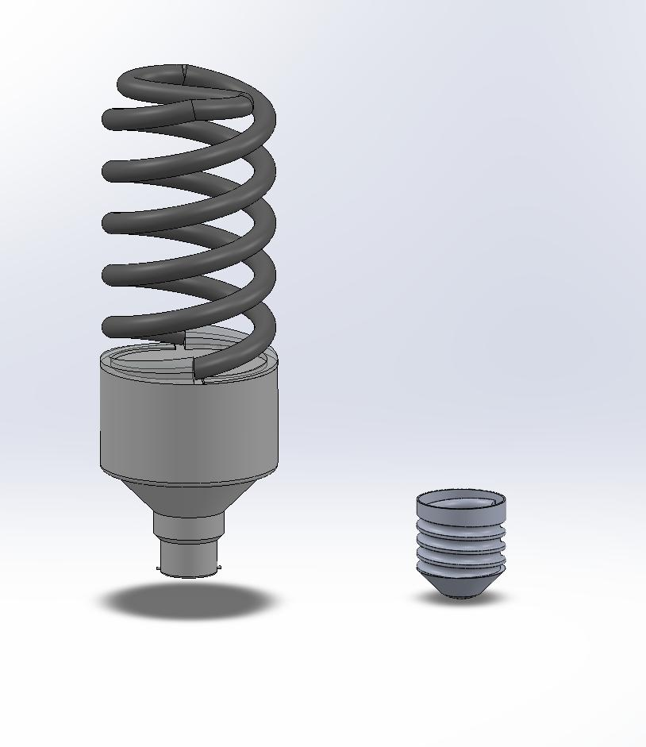

CHRISTOPHER YANES / PORTFOLIO
Design is in
the details.
Mechanical engineering work that connects CAD models, technical drawings, and the parts we make.
Explore selected projects
01 / SELECTED WORK
Selected projects.
From modeling to manufacturing.
02 / APPROACH
From a model on screen
to something you can inspect.
I'm Christopher Yanes, a mechanical engineering student at California Baptist University, with graduation expected in April 2028. My work connects SolidWorks and AutoCAD modeling with Mastercam programming and hands-on CNC milling.
I completed engineering coursework at Chaffey College from 2023 to 2025 and hold a SOLIDWORKS CAD Design Associate certification. I’m interested in opportunities to develop mechanical designs and take them through the manufacturing process.
View SOLIDWORKS certificate (PDF)
- DESIGN
- SolidWorks · AutoCAD · Part and assembly modeling
- MANUFACTURING
- Mastercam · Haas CNC milling · Laser engraving
- DOCUMENTATION
- Detail drawings · Section views · Bills of materials
03 / CONTACT
Let's talk engineering.
For opportunities or questions about my work.